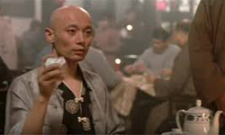
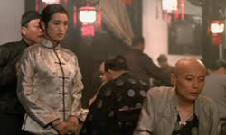
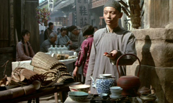
The film is based on the homonymous novel by Yu Hua, and spawned much controversy in China due to its critique of the Communist government, to the point that it was banned in mainland China. However, it managed to win a plethora of international awards, including three from the Cannes Film Festival. The story revolves around a spoiled rich man’s son named Xu Fugui, who is also a compulsive gambler, and his wife, Jiazhen, who has to struggle with his behaviour. However, when he loses his family’s property while gambling, she decides to leave him, along with their daughter. Soon after, the Chinese Civil War breaks out and the family is caught between the two armies, having to perform shadow puppets for the soldiers. The story then moves ahead to the time of the Great Leap Forward, with the struggles of the family continuing in a new setting.
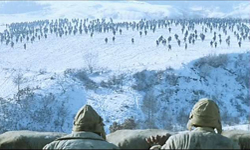
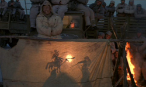
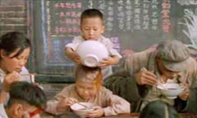
Zhang directs a film that shows the insignificance of man in the whirlwind of China’s history and, in that fashion, presents his take on these events through the lives of the family members. The portrayal of the Chinese people living under social pressures create the meaning of the film, as their grinding experience shows their resistance and struggles under political changes. Zhang's critique on the regime is pointed, starting with the violent uprooting of the middle and upper classes of the previous political situation, and ending with the amateurish practices of its members (student doctors etc) that conclude the film.
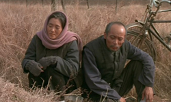
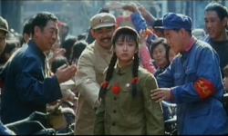
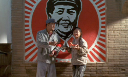
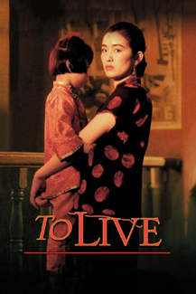
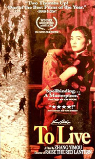
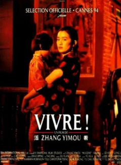
There is some splendid (and pointed) food symbolism in the film including dumplings: the son (Youqing) who is killed had a lunch box with dumplings inside which was never opened. These dumplings reappear as an offering on Youqing’s tomb repeatedly. Rather than being eaten and absorbed, the dumplings are then just lumps of dough and meat standing as reminders of a life that has been irreparably wasted. Another example is mantou (steamed wheat buns): when Fengxia gives birth, Doctor Wang, the only qualified doctor, passes out due to eating too many buns after a long time of hunger. Thus, he was unable to save Fengxia’s life. The mantou, meant to ease his hunger, rehydrated and expanded within his stomach, shrunken with starvation and thus did not save a life - in fact are an indirect killer of Fengxia.
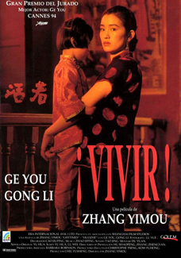
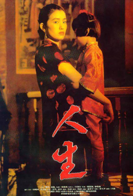
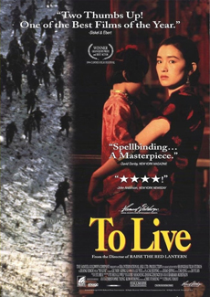